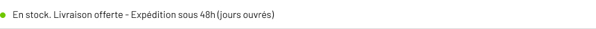
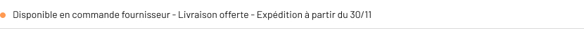
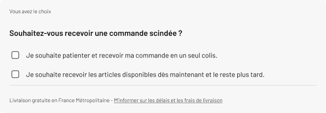

Problèmes majeurs
Les principaux problèmes identifiés concernent :
- Délai de livraison trop longs, manque d’informations claires
- Les clients ont l’impression d’être pris au piège car ils n’ont pas été informés avant d’acheter sur des délais de livraison, manquent d’information sur les délais avant achat
- Augmentation des demandes de remboursement et mauvais avis
- Les clients se plaignent qu’un produit était écrit en stock sur le site alors que ce n’est pas le cas et qu’ils ont dû attendre plusieurs semaines
- Frustration et confusion lorsque les commandes ne sont pas livrées en totalité : Les clients se plaignent car tandis qu’ils ont payés la totalité de leur commande, ils n’ont reçu qu’un des produits, ils sont dans l’attente, l’incompréhension et le désir d’être informés
Solutions proposées
Golf Plus se doit d’être plus transparent envers ses clients sur le web. Améliorations suggérées :
Transparence sur le stock et la livraison
- Afficher différents niveaux de stock sur la page produit et le panier (ajout d'un nouveau niveau de stock)
- Indiquer un délai de livraison estimé pour chaque produit
- Limiter l'affichage de la pastille verte "Livraison disponible" aux produits en stock à l'entrepôt
- Permettre au client de choisir s'il souhaite recevoir ses articles en un seul colis, quitte à patienter.
Détails de disponibilité des produits
- Livraison disponible {stock entrepôt} : livraison offerte, expédition sous 48h jours ouvrés
- Commande fournisseur : livraison offerte (2 semaines à 1 mois)
- En attente de réapprovisionnement {stock magasins GP} : livraison offerte (2 semaines à 1 mois)
Note : une seule de ces options sera affichée en fonction de la disponibilité actuelle du produit.
A date du 06/11 à titre d'exemple :
En stock entrepôt :

En commande fournisseur :

En stock magasin Golf Plus :
Cette ligne est dynamique
Exemple :
Un client est sur la page produit d’une boîte de balles de golf dont nous avons 2 en stock entrepôt. Alors sur sa fiche produit il est indiqué :
Puis, il sélectionne une quantité de 3. Alors il est indiqué :
S’il enlève 1 et choisi une quantité de 2, alors est indiqué : :
La ligne du click and collect ne change pas (disponible dans X magasins : choisir mon magasins // Indisponible en retrait magasin)
Information sur la page panier / checkout
// Lorsque le produit n'est pas stocké à l'entrepôt, le client passe sa commande en ayant conscience que le délai de livraison peut être long. Il n’aura pas d’insatisfaction dû à une attente. Il est informé avant d’acheter.
Pour aller plus loin
Service client et expérience utilisateur
Dans l'idéal, il ne faut pas de commande scindée, surtout si celle-ci à un écart important entre les colis. Cela renvoie une image négative du site e-commerce.
Le client peut choisir s'il souhaite recevoir une commande scindée.

Alerte stock
- Une alerte est envoyée à David et Mohamed dès qu'une référence entrepôt passe en stock faible afin de pouvoir anticiper les futures commandes.
Ce qui change :
Une communication transparente sur le stock et la livraison sur le site web.
- Délais de livraison indicatifs affichés clairement
- En stok seulement les produits de l'entrepôt (expédition rapide)
- Un troisième niveau de stock affiché, il concerne le stock magasin et un délai plus long.
- Le client est informé plus clairement par un message d'alerte sur la page panier si au moins un des produits peut être concerné par un délai de livraison plus long
- Permettre au client de choisir s'il préfére attendre et recevoir sa commande en un seul envoi ou s'il souhaite recevoir les produits disponibles maintenant et le reste dans un second temps
Résultat attendu
- Les clients reprennent confiance en Golf Plus (web)
- Les clients sont satisfaits de la transparence et du service
- Les clients sont informés à chaque étape d'achat sur le site, moins de sollicitations par mail et téléphone
- De meilleurs avis sur le service client et le site web
- Beaucoup moins de demandes de remboursement et d'annulation de commande